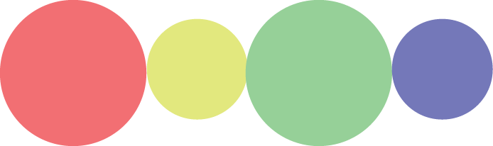

Software
List of research platforms I (co)-developed
| expressRNA: post-transcriptional open-source integrative analytics platform, combining protein-RNA binding datasets with feature selection (from RNA-seq) and motif signals. I developed this platform during my Phd and i am keeping it alive, also using my own personal funding. Currently, we are extending it to allow upload of long-read sequencing data (Nanopore, PacBio). Additionally, we plan to include single-cell RNA-seq alternative polyadenylation analysis, since 10xGenomics data is 3'-end targeted, which allows for detailed studies of RNA 3'-end regulation. |
|  | microbeAtlas: Abundance and cluster analyses of more than 1 million metagenome samples. A distinguishing feature of our approach is that we do not only provide the analysis results of individual microbial communities or single studies, but combine the analysis of all microbial communities and studies to obtain a comprehensive picture of the ecology of microbes. This resource was made possible by the conclusion of several methods, tools and pipelines (HPC-CLUST and MAPseq). |
| RNAmotifs2: an independent Python package, the cluster version of the RNAmotifs software (extended to look for regulatory motif clusters). The software is integrated with expressRNA and for now doesn't have a web interface of it's own. |
| SNPsyn: a Flash interface to the GWAS SNP-SNP interaction web analytics software. It allows the upload of SNP data with phenotype to then compute synergistic SNP pairs which explain the phenotype. |
| dictyExpress: gene expression profile bioinformatics analytics of Dictyostelium discoideum, a very interesting (and social!) amoeba. The initial version of this software (Rot et al., 2009) was one of the first interfaces of this kind (Flash), which allowed exploratory bioinformatics analysis (gene expression profiles, clustering, GO enrichment, co-expression) from RNA-seq data. |